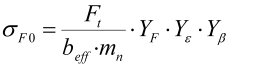
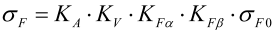
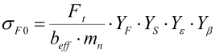

|
|
|


静力计算
每个系数（工况系数、齿向载荷分布系数、横向系数、动载系数）均设置为 1.0。齿根处的载荷根据 ISO 6336 方法 B，使用齿形系数和螺旋角（不含应力修正系数）计算。
|  | (15.1) |
|  | (15.2) |
它还计算局部齿根应力乘以应力修正因子 YS。该应力约等于在 FEM 模型中计算出的正应力，并在报告中输出：
|  | (15.3) |
应力修正因子 YS 用于考虑根圆半径处的局部应力集中。
在静载荷情况下，材料可以在此区域局部膨胀，这尚未导致失效，但会引起应力重新分布，从而降低最高应力。
在这种应力重分布的情况下，不再需要因子 YS，因为由 YS 所考虑的应力集中已经被消除。
因此，一般情况下，可以在不考虑因子 YS 的情况下计算静力安全系数。因此，结果窗口中显示的安全系数是不考虑因子 YS 计算的结果。
如果您有非常关键的应用，例如航空齿轮箱，仍可以包含因子 YS 以获得更保守的结果。在这种情况下，主要报告中列出的结果确实包含 YS。
Static calculation
Each coefficient (application factor, face load factor, transverse coefficient, dynamic factor) is set to 1.0. The load at the tooth root is calculated with the tooth form factor according to ISO 6336 Method B and the helix angle (without the stress correction factor).
| (15.1) | |
| (15.2) |
It also calculates the local tooth root stress multiplied by the stress correction factor YS . This stress is approximately the same as the normal stress calculated in an FEM model. This stress is output in the report:
| (15.3) |
The stress correction factor YS is used to take into account a local stress concentration in the root radius.
In the static load case, the material can expand locally in this area, which does not yet lead to failure, but results in a stress redistribution, thereby reducing the highest stress.
In this situation of stress redistribution, the factor YS is no longer required because the stress concentration, which is taken into account by YS, has been eliminated.
Therefore, in general, static safety factors can be calculated without the factor YS. For this reason, the safety factors shown in the results window are the results calculated without the factor YS.
If you have a very critical application, e.g. an aerospace gearbox, the factor YS can still be included in order to obtain a more conservative result. For this case, the listed results do include YS in the main report.